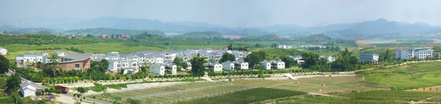

梦想开始的地方
文/ 王静 【华润五丰】
当年怀着学农报国的雄心壮志，在高考填写志愿时，不顾家人的反对，朋友的质疑，同学的劝阻，毅然选择了农业大学的园艺专业。如今，我得偿所愿，在一片片农田上耕耘我的梦想。泥浆混织着汗水，我无悔付出，静待梦想之树舒枝展叶，欣欣向荣。
澄碧湖畔，苍翠葱葱；田野平旷，屋舍俨然——百色华润希望小镇——我梦想起航的地方。这里没有都市的繁华与热闹，却有都市没有的宁静与生机。时维九月，序属三秋，然而脚步刚刚踏上这片土地，就被它火热的性格，翠绿的颜色包裹，来自四川的辣妹子决定开始在这片热土上流淌涓涓汗水。
九月，正是圣女果的育苗期，三个农场，6000亩地上正在进行一场没有硝烟战争。初来乍到，刚毕业的鲜肉，职场上的菜鸟，还未来得及转换身份，就挽起衣袖，一头扎入农场。每天在育苗场上浇水、施肥，打药，增强肱二头肌的力量。这一次从学生到职场的转身虽然并不华丽，但满身的泥土芬芳让我感受到行动中的力量，稳健踏实。
然而即使是在本应凉爽的秋季，育苗棚的温度都在40度以上，中午的时候可以达到50度，我每天都能享受免费的桑拿浴，汗水像是没有拧紧的水龙头，周围人吐槽道：“现在你流了多少汗，取决于你高考报志愿的时候脑子里进了多少水，继续你的农业报国吧！”虽然我快要失水蔫吧了，然而看到圣女果苗长得健康茁壮，一天一个样。这让我相信最初的梦想。
在育苗棚旁边，种的是大棚甜瓜。正值花期，甜瓜需要异株授粉，通俗讲就是雌花需要其它株的雄花授粉，在大棚里无法借助风力、昆虫授粉情况下，人类就起到了相当关键的作用。每天早上9-10点，花粉活力最强的时候，我便会去甜瓜棚带着掌握着育或不育神圣的生死大权为甜瓜授粉。甜瓜在授粉后像是充气的气球，在工人的悉心照顾下，两天就有拳头大小了，我像抚养自己的孩子一样，看着他们渐渐丰润、饱满、收获......
农业是“靠天吃饭”的，所以才创造了“风调雨顺”这个词。百色也是个天灾特别多的地方，来到这儿的每一年除了收获的甜美和喜悦，我们也不得不遍尝各种灾害的辛酸苦楚。
2014年，遇上霜冻天气，已经挂果的几百亩的圣女果在一夜之间被冻干，像被火烧过一般，一片枯黄；2015年，已经开始产果的圣女果感染上了疫病，短短两周时间，上千亩的农场一片霉灰色，腐烂的臭味让每一个为农场辛勤劳作的人泪流满面......
还记得一个平静祥和的早晨，一场飞来横祸，毫无预兆，从天而降。一声轰鸣，崩腾而来的洪水夹杂着泥沙，像暴怒的狂狮，怒吼着、狂奔着冲向甜瓜棚。原来是上游的水库决堤了。洪水不断的涌入大棚，瓜蔓像是抓住一根救命稻草一样，紧紧的缠绕在引蔓的绳子上，在浑浊的洪水里呛得挣扎着只露出头来。育苗棚的育苗盘都浮了起来，像是溺水者一般，不断的想要往上窜，却最终还是被肆意的洪水摁倒在水底。我和小镇的工作人员奋不顾身的冲进大棚，希望用身体为瓜果们竖起一道保护屏障，万幸的是水库的水量慢慢减少，破坏力逐渐减小，后又经过一天不间断的排水抢救，最后圣女果苗经过抢救，几乎没有损失，有4个大棚的甜瓜被淹，其中2个大棚结构被破坏。
既窈窕以寻壑，亦崎岖而经丘。任何事业都没有风调雨顺，那只是人们的愿景罢了，但恰恰是这些崎岖灾害，让我理解了农民的不易，农业现代化发展的迫切与必要。虽然我们不能把控天灾，但至少可以做尽人事，用科技和智慧把农业做大做强，农业报国的意义也正在于此吧。
尽管每一年必经历洪水、旱涝，冰雹、霜冻，但是我们却犹如一个永不言败的“特种兵”，不断地探索一种因地适宜的机械化、精准化的现代农业发展模式。现在的百色华润希望小镇，已经扭转土地面积1万亩，已种植现代避雨栽培葡萄1620亩，水稻种植1157亩，甘蔗种植4501亩，圣女果种植560亩，现代化大棚甜瓜88亩，所有的土地都已经实现了“水肥一体化”精准灌溉，产出的农产品也得到了消费者的认可。
曾记得有一位百色当地善良淳朴的村民问我你为什么要从那么远的地方来这里工作。我笑着回答她说：“因为我们那里没有希望小镇呀!”她无不感慨地说道：“是呀，以前村子里，一下雨，道路泥泞，淤泥有半脚深，垃圾到处都是，华润来了以后，这里发生天翻地覆的变化。屯里变得干净漂亮了，道路宽敞了，种上花花草草，每家还有独立的小楼小院，比城里还要舒适，逢年过节还有各种慰问节目看。儿子不再外出打工了，也在农场做工，还娶了媳妇，现在孙子都快上小学了”说到这儿，阿姨心满意足的笑了。
华润希望小镇是阿姨梦想开始的地方，也是每个村民梦想开始的地方。在不远的未来，华润希望小镇还将建设在中国更多的山山水水之中。习近平总书记说，中国梦，说到底是每个中国人的梦。华润希望小镇，说到底就是中国最广大农民的幸福致富之梦！
- 分享到: